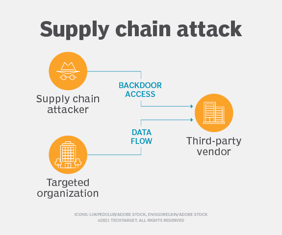

DoS and DDoS attacks

Source: Cloudflare
A denial-of-service (DoS) attack is designed to overwhelm the resources of a target system to the point where it is unable to reply to legitimate service requests, normally resulting in the system having to be taken offline. While the goal is usually to deny service (or take a system offline), this type of attack can also create other vulnerabilities for the attacker to exploit while the system is down, or being brought back online.
DDoS stands for distributed denial-of-service, meaning the use of many machines to attack the target. (Usually malware infected host machines or botnets.)
Further reading: https://www.fortinet.com/resources/cyberglossary/types-of-cyber-attacks
Ransomware
Source: Eset
Ransomware is an attack whereby a target system is infected with malware designed to lock the target system down, so the target is unable to use it. These systems that are targeted are generally business critical and extremely important systems, such as database servers, file servers, and core application servers. It gets its name from the attacker ransoming the system back to the target in exchange for something – usually money.
A notable example would be the shipping company Toll, which was attacked twice in 2020. This not only affected Toll, but it also affected the companies which used Toll to ship for them. A company I used to work for had to write off a significant amount of stock that was lost in transit and unable to be recovered due to this attack.
Further reading: https://www.fortinet.com/resources/cyberglossary/types-of-cyber-attacks
DNS Spoofing

Source: cloudns.net
With DNS (Domain Name System) spoofing, a hacker alters DNS records to send traffic to a fake or “spoofed” website. Once on the fraudulent website, a user may enter sensitive information that can be used or sold by the hacker. In a DNS spoofing attack, the attacker takes advantage of the fact that the user thinks the site they are visiting is legitimate. This gives the attacker the ability to commit crimes in the name of an innocent company, at least from the perspective of the visitor.
Further reading: https://www.fortinet.com/resources/cyberglossary/types-of-cyber-attacks
Man in the Middle attack

Source: The SSL Store
MiTM attacks are common among sites that haven’t encrypted their data as it travels from the user to the servers (sites using HTTP rather than HTTPS.)_ The attacker then intercepts the data being transferred. If the data isn’t encrypted, the attacker can easily read everything being transferred – things like personal information, passwords, payment details, etc.
Further reading: https://www.tripwire.com/state-of-security/most-common-website-security-attacks-and-how-to-protect-yourself
Phishing
Source: Hungerford
Phishing is the practice of sending fraudulent communications that appear to come from a reputable source, usually through email. The goal is usually to steal sensitive data, like logins, personal information, or payment details.
At a previous employer, our payroll officer was tricked into updating payment details for three staff members to fraudulent accounts. The attacker had set up fake email accounts that appeared similar to the personal accounts of the employees, and then sent emails to the payroll officer who then updated the details. They had apparently found this information through publicly available resources – namely LinkedIN.
Further reading: https://www.cisco.com/c/en_au/products/security/common-cyberattacks.html#~how-cyber-attacks-work
Cross Site Scripting (XSS)
Source: Simplilearn
Cross Site Scripting (XSS) is a code injection attack in which an adversary inserts malicious code within a legitimate website. The code then launches as an infected script in the user’s web browser, enabling the attacker to steal sensitive information or impersonate the user. Web forums, message boards, blogs and other websites that allow users to post their own content are the most susceptible to XSS attacks.
Further reading: https://www.crowdstrike.com/cybersecurity-101/cyberattacks/most-common-types-of-cyberattacks/#5.%20Identity-Based%20Attacks
Supply Chain attacks
Source: techtarget.com
A type of attack whereby a trusted third party vendor who offers software or services is attacked. Software supply chain attacks inject malicious code into an application in order to infect all users of an app, while hardware supply chain attacks compromise physical components for the same purpose. Software supply chains are particularly vulnerable because modern software is not written from scratch: rather, it involves many off-the-shelf components, such as third-party APIs, open source code and proprietary code from software vendors.
Further reading: https://www.crowdstrike.com/cybersecurity-101/cyberattacks/most-common-types-of-cyberattacks/#7.%20Supply%20Chain%20Attacks
Compromised Credentials

Source: pentestpartners.com
This type of attack is where a set of users credentials – usually username and password – have been exposed to unauthorised entities, usually without the owner of said credentials knowing. These credentials are then used to gain access to accounts, potentially across a series of websites and applications, by the attacker. These kinds of attacks can be avoided through use of two-factor authentication, regularly updating passwords, not reusing passwords and credentials across different domains and systems.
Further reading: https://www.balbix.com/insights/attack-vectors-and-breach-methods/
Malicious Insider
Source: softactivity.com
A malicious insider is an employee who exposes private company information and/or exploits company vulnerabilities. Malicious insiders are often unhappy employees. Users with access to sensitive data and networks can inflict extensive damage through privileged misuse and malicious intent.
Further reading: https://www.balbix.com/insights/attack-vectors-and-breach-methods/
Drive-by attack
Source: HeimdallSecurity
In a “drive-by-download” attack, an unsuspecting victim stumbles upon a website that surreptitiously infects their device with malicious software. This website can be under the direct control of the attacker or may have been compromised. In some instances, the malware is cunningly embedded within content like banners and advertisements. The prevalence of exploit kits has lowered the barrier to entry for aspiring hackers, enabling them to effortlessly create malicious websites or disseminate harmful content through various channels.
Further reading: https://www.lepide.com/blog/the-15-most-common-types-of-cyber-attacks/